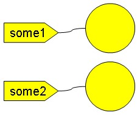
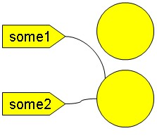
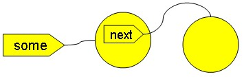
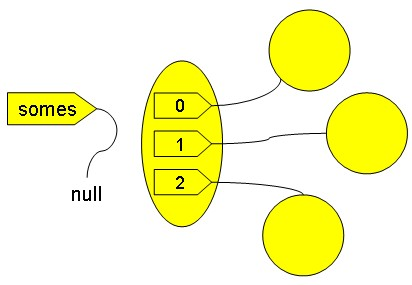
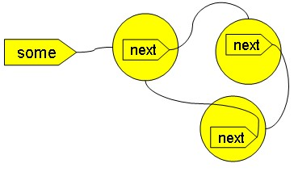
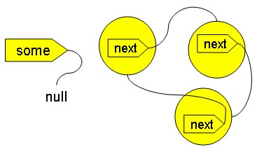

在啟動JVM之後，JVM中就會有一些執行緒，最基本的，就是執行程式進入點的主執行緒（main thread），基本上，這條執行緒是你要關心物件是否成為垃圾的起點。
假設你有一個類別：
public class Some {
Some next;
}
Some next;
}
若是從程式進入點開始，有段程式碼如下撰寫：
Some some1 = new Some();
Some some2 = new Some();
Some some1 = some2;
Some some2 = new Some();
Some some1 = some2;
執行到第二行時，主執行緒可以透過參考名稱所參考到的物件為：

執行到第三行時，是將some2參考的物件給some2參考，所以變成這樣：

這個時候，原先被some1參考的物件不再被任何名稱參考，透過主執行緒也不再可以參考到該物件，這個物件就是記憶體中的垃圾了，GC會自動找出這些垃圾並予以回收。
如果是建立的新執行緒，例如：
public void someMethod() {
Thread thread = new Thread() {
public void run() {
Some some = new Some();
...
}
};
thread.start();
}
Thread thread = new Thread() {
public void run() {
Some some = new Some();
...
}
};
thread.start();
}
在someMethod()執行過後，只要建立的執行緒還沒有離開run()方法，也就是執行緒還沒進入dead狀態，則該執行緒所參考的物件就一直還可以利用，也就不會被垃圾回收。
如果有段程式是這樣：
Some some = new Some();
some.next = new Some();
some = null;
some.next = new Some();
some = null;
在執行到第二行時，情況是這樣的：

而執行完成第三行後，情況變成如此：

這個時候，some原先所參考的物件，會被回收，而next所參考的物件亦因無法被循線參考到，也會被回收。所以同樣地道理，下面的程式碼中，陣列所參考到的物件全部都會被回收：
Some[] somes = {new Some(), new Some(), new Some};
somes = null;
somes = null;

如果是形同孤島的物件，例如：
Some some = new Some();
some.next = new Some();
some.next.next = new Some();
some.next.next.next = some;
some = null;
some.next = new Some();
some.next.next = new Some();
some.next.next.next = some;
some = null;
執行到第四行時，情況是這樣的：

執行完第五行後，情況變為如此：

這個時候形成孤島的右邊物件，將全部被GC給處理掉。